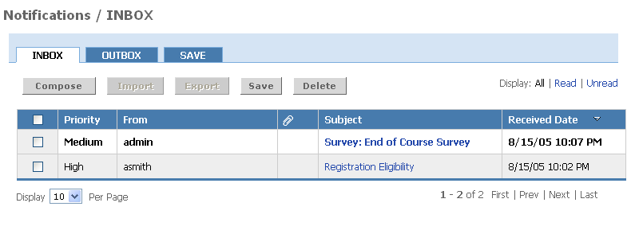

The Notifications Channel displays notifications for a particular user. These notifications are generated from a number of events within Academus Collaborative Groupware as well as the Personal Calendar and Survey Channels. Notifications can be authored and sent directly from the notification portlet, if a user has been granted certain permissions.

Viewing Notifications
To view notifications:
- By default, the most recent notifications will be displayed in the initial notifications view. Click on the More or Inbox link to access your inbox and view all notifications.
- To access the detailed content of a notification, click the subject link.
- In the details view, you will see the priority, date received, sender, subject, notification message and links to any attachments.
- To delete the notification, click the Delete button.
- To save the notification in your notification save folder, click the Save button.
- Click Return to INBOX to return to the inbox list view.
- To filter your inbox message list by read notifications only, click the Display Read link. To return to the list of all messages, click Display All.
- To navigate through a long list of messages, use the Next and Prev links.
Deleting Notifications
To delete notifications:
- Place a checkmark next to each notification you wish to delete.
- Click the Delete button.
- Verify that your selection appears in the left navigation pane under the Items You Have Selected to Delete heading.
- Click the Yes radio button to confirm the deletion of these messages.
- Click the Submit button.
The notifications you selected will no longer appear.
Saving Notifications
To save notifications:
- Place a checkmark next to each notification you wish to save.
- Click the Save button.
- Your messages will be moved to the save folder. Saved message will remain in the saved folder until deleted by you or by a system administrator.
The notifications you selected will no longer appear in your Inbox.